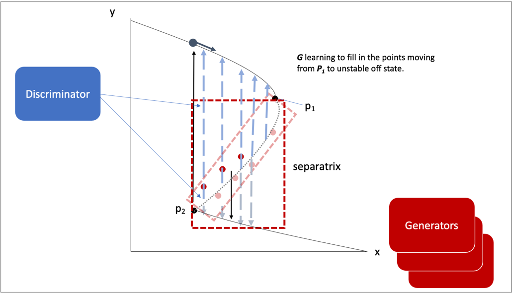
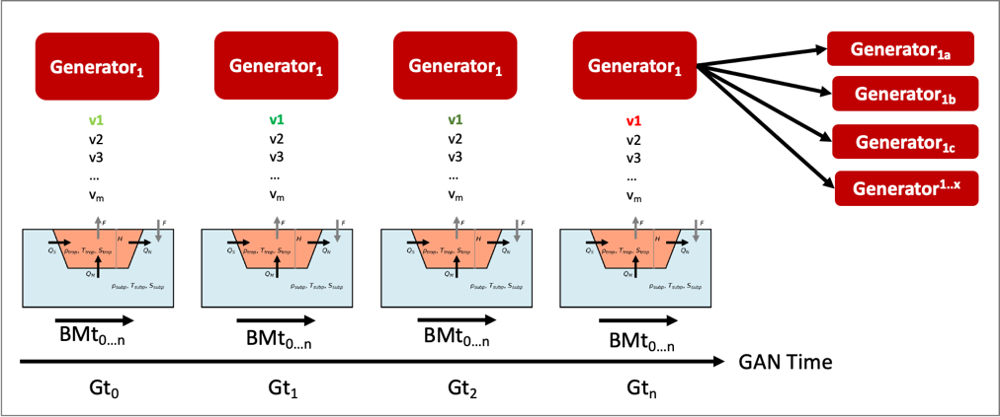

Milestone 2 Progress Report
Report on Developing Framework for the Hybrid Models Identifying the Known and Unknown Parts Along with Mathematical Approaches
1 Overview
This technical report covers the period of January, 2022 through March, 2022. The report documents the achievement of the milestone associated with Month 2 of the JHU/APL-led PACMAN team’s statement of work.
2 Goals and Impact
The goals for this milestone include reporting on the progress of: a) designing the experimental setup of physics-informed learning for surrogate models, b) developing the initial architectures, loss functions and integration plan for surrogate, causal, and neuro- symbolic models; c) defining how scenario statements will be represented symbolically, how what-if questions will be generated by the GAN and any computational requirements, and d) developing a theoretical design of the causal inference and climate neuro- symbolic language.
3 Task 3. AI Physics-Informed Surrogate Models
Subtask 3.2. AI Physics-Informed Surrogate Model Learning
As described in our Milestone 1 report, we are developing models in increasing levels of complexity. As mentioned, we are using the Gnanadesikan four box model as a surrogate model to begin. This model offers a simplified way to observe AMOC shutoff behavior. In this first iteration, we will develop the fold bifurcation method that could be applied to the Gnanadesikan four box model. We will also begin developing the reduced AI models to be used as an AI surrogates in place of the Gnanadesikan four box model. Understanding the role of the Gnanadesikan four box “surrogate” model will be fundamental in designing the AI surrogate models. Thus, we have performed a detailed study of the box model Matlab code, initial state variables, parameters, and the model equations. From this study, we describe the methodology that will be used.
Tipping point computation plan for the (stochastic0 Box model)
To begin, we will develop one-parameter bifurcation diagrams of the (deterministic part) of the box model (9 differential equations) with respect to the separate parameters; it is already known that hysteresis, and therefore a violent “jump” between different behaviors, arises in the regime we will explore. In the neighborhood of the turning (tipping) point, the model reduces to an effectively one-dimensional model since one eigenvalue is close to zero. Then stochastic simulations will give rise to time series “jumping” across different states.
We will collect these time series as a function of the parameter and then:
Use data mining to reduce the 9-dimensional state to a one- or two-dimensional data driven state
Learn (using NN identification technology with architectures / loss functions based on numerical stochastic integrators) the effective parameter-dependent surrogate Stochastic Differential Equations (SDE) and
Compute the distribution of escape times from simulation and from the requisite model-based Partial Differential Equation (PDE) solution.
Use some of the physical parameters to control/stabilize the unstable (saddle) state living on the separatrix.
Approximate the states on this low-dimensional separatrix (a saddle and its stable manifold) based on the drift of the effective SDE.
 Demonstration of the components
Demonstration of the components
 The solution steps are illustrated below for a different
complex dynamic model (an epidemic on an adaptive network). We will
adapt our existing method for the epidemic problem, and apply this
method to the AMOC problem. Network dynamic stochastic simulations are
performed for various parameter values. In Figure 1, we show a
single infection
parameter\(\text{\ p\ }\text{is\ changed}\ \)and observe the
bifurcation behavior with respect to it – at the “high p” limit, close
to \(70 \times 10^{- 5}\), we see clear transitions between two
stable states (a stable steady state and a large stable oscillation,
shown in the inset.) In Figure 1, the white line tentatively marks
a branch of unstable limit cycles. Shaded regions mark ranges of ρ
observed during long individual-based simulations in the neighborhood
of the large attractive limit cycle (light gray) and of stable of
stationary solutions (dark gray). Computation of the Jacobian
eigenvalues
The solution steps are illustrated below for a different
complex dynamic model (an epidemic on an adaptive network). We will
adapt our existing method for the epidemic problem, and apply this
method to the AMOC problem. Network dynamic stochastic simulations are
performed for various parameter values. In Figure 1, we show a
single infection
parameter\(\text{\ p\ }\text{is\ changed}\ \)and observe the
bifurcation behavior with respect to it – at the “high p” limit, close
to \(70 \times 10^{- 5}\), we see clear transitions between two
stable states (a stable steady state and a large stable oscillation,
shown in the inset.) In Figure 1, the white line tentatively marks
a branch of unstable limit cycles. Shaded regions mark ranges of ρ
observed during long individual-based simulations in the neighborhood
of the large attractive limit cycle (light gray) and of stable of
stationary solutions (dark gray). Computation of the Jacobian
eigenvaluesThe coarse subcritical Hopf bifurcation at \(p_{A} = 73.7 \times 10^{- 5}\) is one example of a tipping point. We will initially be identifying fold bifurcations for the simple box model; however, we will need to identify other types of bifurcations such as Hopf as we increase in model complexity. Beyond it (\(p\) > \(p_{A}\)) we have BOTH a stable steady state and a stable limit cycle – and the separatrix between them is an unstable limit cycle. In Figure 2, we show the phase portrait of the coexistence of the big stable limit cycle, a small unstable limit cycle (separatrix, ``tipping boundary’’) and a stable steady state for \(p = 75 \times 10^{- 5}\). When we initialize inside the unstable (broken line, separatrix) limit cycle, we get attracted to the stable steady state; when outside the unstable limit cycle, we go to the large, stable limit cycle. When we start very close to the unstable limit cycle, we “linger around it” for some time before deciding which way to go – this “lingering” becomes much more complex in the stochastic case, as seen in time series in Figure 3, where transients are shown.
 In Figure 3, we show transitions between two states (a
stable steady state and a large oscillation). The physical coordinates
\(\theta_{Ι}\) is in red and \(g_{\text{ss}}\) is in blue for
different values of the parameter \(p\ ( \times 10^{- 5})\).
Instances of ``transitioning” between large oscillations and steady
states can be seen at intermediate parameter values. For large values of
p, we go to the stable steady state (the only attractor); for small
values, we see the large oscillations – and for intermediate values we
see large oscillations, and quiescent periods, and hovering around
“mid-level oscillations” – hovering around the separatrix.
In Figure 3, we show transitions between two states (a
stable steady state and a large oscillation). The physical coordinates
\(\theta_{Ι}\) is in red and \(g_{\text{ss}}\) is in blue for
different values of the parameter \(p\ ( \times 10^{- 5})\).
Instances of ``transitioning” between large oscillations and steady
states can be seen at intermediate parameter values. For large values of
p, we go to the stable steady state (the only attractor); for small
values, we see the large oscillations – and for intermediate values we
see large oscillations, and quiescent periods, and hovering around
“mid-level oscillations” – hovering around the separatrix.
We use a neural network, shown in Figure 4, to learn the effective SDE shown in Figure 2.
Figure 4. A caricature of the Neural Network architecture used to learn the drift and diffusivity of the stochastic differential equation.
The “tipping point” reduced phase space is shown in Figure 2 – a stable steady state coexisting with a large amplitude oscillation; the separatrix is the unstable limit cycle shown in a broken line. The phase portrait in terms data driven variables (diffusion map coordinates) is shown in Figures 5 and 6 computed on sampled data of the full network for \(p = 75 \times 10^{- 5}\ \). In Figure 5, we show the same dynamic trajectories as above, plotted not in physical space, but instead in latent, data-driven space where the first two “nonlinear principal component” Diffusion Map coordinates come from data mining the time series.

Figure 5: The first two, data-driven (Diffusion Maps) coordinates colored with the two physical coordinates \(\theta_{Ι}\)and \(g_{\text{ss}}\) indicating visually the one-to-one relation between the physical and the data-driven coordinates.

Figure 6: A 3D figure of the transients in latent space, shown colored with by evolution time. On the figure on the left, also the projections on the various 2D planes are shown.
In Figure 6, we show the same transients in three-dimensional latent space (the space of the first three “nonlinear principal components”, i.e. the first three nonharmonic diffusion map components). The transients are shown colored with by evolution time.
{kind=link}
And the tipping point (two attractors and the separatrix) is shown in data driven observable space is shown in Figure 7.
Our escape time distribution computations are shown in Figures 8 a, b, and c. Figure 8a shows the escape times predicted by a network trained on physical variable time series (the mean of the distribution is 0.255 and 10,000 trajectories were used in these computations), while Figure 8b shows the one trained on diffusion map time series (the mean value of 13,000 sampled trajectories was 0.295). Figure 8c shows the escape times for the full network simulation for two networks (the mean escape time of the Network 1 was estimated at 0.527 (from 12,000 simulated trajectories) and the mean escape time of Network 2 was estimated at 0.197 (from 6,600 simulated trajectories).
 An important next step will involve the integration of this
method with the GAN-based estimation of the separatrix (the unstable
limit cycle). We describe below how the GAN will learn the space of the
separatrix. The integration of the bifurcation method will support the
discriminator in learning the stabilities and instabilities in the
model. Initially the discriminator will use the Gnanadesikan four box
model as its surrogate. However, as we start to build the AI surrogate
models, we will eventually move from the Gnanadesikan four box model as
the surrogate to the AI surrogate.
An important next step will involve the integration of this
method with the GAN-based estimation of the separatrix (the unstable
limit cycle). We describe below how the GAN will learn the space of the
separatrix. The integration of the bifurcation method will support the
discriminator in learning the stabilities and instabilities in the
model. Initially the discriminator will use the Gnanadesikan four box
model as its surrogate. However, as we start to build the AI surrogate
models, we will eventually move from the Gnanadesikan four box model as
the surrogate to the AI surrogate.
4 Task 4. Multi-Agent Neuro-Symbolic AI Simulation
Subtask 4.2. AI Simulation Development
Initial Architectures – The GAN
As proposed, we are exploring the use of a generative adversarial network for the simulation. The architecture primarily follows model prescribed in the original paper by Goodfellow 2014 including two networks, a discriminative network D and a generative network G, which engage in an adversarial game until a potential Nash equilibrium is reached. However, we modify this initial setup by replacing the generator G with a set of generators G1..m. As previously described in terms of the value function, V, is defined by:
G represents the generator neural network and D represents the discriminator neural network, \(\mathbb{E}_{x}\) represents the expected value over data samples and \(\mathbb{E}_{z}\) represents the expected value over generated samples, with adjusted D parameters to minimize log D(x) and adjusted G parameters to minimize log(1-D(G(x))) define the minimax game. D tries to maximize its loss and G tries to minimize its loss. Prior information constrains the pz(z) distribution. Since there will be M generators G1:M , this value function will be further modified.
The team has begun building a prototype GAN in order to explore using multiple generators. In order to gain a better understanding of how this interaction will occur with respect to G1:M, the prototype entails a simple 1-equation surrogate model, a basic representation of the problem, and a multi-generator GAN. We are using this prototype to better understand the requirements of the loss function for both the discriminator and the generator, which needs to account for multiple generators. Simultaneously, a deeper treatment of the adversarial game and the job of both the discriminator and the generators is being explored.
Our early experiment is a 1-D non-parametric density estimation using MAD-GAN. Shown in Figure 9 on the left is a sample from a 5-component 1-D Gaussian Mixture Model (GMM), and on the right shows an overlay of a sample of generator outputs (in this case 4) after 50,000 updates to the discriminator and generator. The sample distributions of all of the generators appear to be “converging” towards the real distribution, but not necessarily one generator per modality as described in the paper.

Figure 9. MAD-GAN 1-D GMM Experiment to better understand the behavior of GANs with multiple generators.
The Gnanadesikan Four Box Model
 As proposed, the Gnanadesikan four box model, depicted in
Figure 10, will be used for the first version of this simulation.
The Gnanadesikan four box model is a simple dynamical model that
includes southern, low latitude, and northern surface boxes and one deep
box. The low latitude and the deep box are designed to allow for
adjustments based on forcings. In addition, temperature and salinity in
all four boxes support variation.
As proposed, the Gnanadesikan four box model, depicted in
Figure 10, will be used for the first version of this simulation.
The Gnanadesikan four box model is a simple dynamical model that
includes southern, low latitude, and northern surface boxes and one deep
box. The low latitude and the deep box are designed to allow for
adjustments based on forcings. In addition, temperature and salinity in
all four boxes support variation.
The Adversarial Game
Recall as depicted in Figure 11, the surrogate model will be used by the discriminator to run in model time, based on initial conditions and parameters specified. The initial simulation setup will use the Gnanadesikan four box model. This will enable simultaneous development of the AI surrogates and the GAN architecture without a strong initial dependence. The Gnanadesikan four box model simulations will be used to generate data for both the GAN and the AI surrogate model work.
{kind=link}
The adversarial game entails the generator processing data that includes the model initial state variables, parameters, ranges, and hard bounds allowable for perturbation (i.e., hard bounds imply states that would violate realistic, physical states). The generator will randomly choose a parameter to perturb and a value (bounded). This will be presented to the discriminator as a run that would potentially result in a shutoff of the AMOC or more generally instability in the model. The discriminator’s goal is to maintain stability in the model. It will run the Gnanadesikan four box model using the initial state variables and the parameters with the suggested perturbation. The discriminator will use a method that we are building to establish whether instability was reached while moving through box model time. If not, it will classify the model, initial state variables, and parameters with the suggested perturbation as stable. If an instability is reached it will classify the model, initial state variables, and parameters with the suggested perturbation as unstable. The discriminator will indicate to the generator whether the suggestion led to a tipping point. The generator agents will continue to explore the parameter space of the model, eventually leading to fully explored space of instability depicted in Figure 12, as a 2-D representation. The generators will thus explore the space of points that are found in the separatrix. The discriminator will learn over time what to avoid in terms of instability and what in parameter space could be used to avoid the instability in future runs.
{kind=link}
It is important to note that there are two dimensions of time in this adversarial setup, as shown in Figure 13, there is the box model time dimension for which the model runs for n timesteps, and there is the time dimension in terms of the GAN adversarial game. The first version of this prototype will explore returning a binary label indicating whether the AMOC shutoff was reached or was not reached. This will either end the search for this agent, trigger another random perturbation across parameter space, or trigger a further perturbation of the current parameter. Understanding how the generators will work together exploiting the parameter space and what is required of the loss function which will include the state of the generators, is currently under investigation.
{kind=link}
The discriminator is also learning what combination of initial conditions and parameters reach a shutoff. The discriminator has a set of input samples which are built from simulated box model runs. The set of input samples will be used to train the discriminator to learn which combination of parameters and initial conditions lead to a shutoff and which do not. As the generators present new potential combinations, the discriminator will run out the model with the presented combinations. These eventual runs will enable the discriminator to learn generalizations that lead to both instabilities and stabilities in the model.
Neuro-Symbolic Language
In order to develop the neuro-symbolic language the team has devised a simple question that can be traced through the equations to the box model code.
The Example Question:
Does the stability of the overturning depend on the pathways and sensitivities of water mass transformation in the Southern Ocean?
How this question translates to the Gnanadesikan four box model is defined as follows.
Water mass transformation in the South \(M_{s}^{\text{trans}}\)(representing the net transformation of dense water to light water) is a combination of Eddy fluxes and Ekman Fluxes
Where \(\tau_{x}^{s}\) is a wind stress, f is the Coriolis parameter \(L_{x}^{s}\) is the length over which we integrate (outcrop of a critical density surface?). \(A_{\text{GM}}\) is the eddy advection coefficient, D is the Depth of the pycnocline and \(L_{y}^{s}\) is the width of the ACC/length scale over which the pycnocline shallows. The same \(M_{s}^{\text{trans}}\)can be achieved with different combinations of parameters even given the same pycnocline depth. In general, for a given \(M_{s0}^{\text{trans}}\) if \(\tau_{x}^{s}\) is changed (which can vary across different models) then this balance is used as:
to find a mixing coefficient that will give an identical water mass transformation in the South.
The team has been working through a translation from the proposed questions – to the Gnanadesikan four box model code – to a structured language. The structured language represents constituents in terms of graphs. This representation will enable both the ability to perform inference and to apply automatic graph enrichments if need. The initial graph structure has taken the form of representing a simulation as shown in Figure 14. The team will further refine this work and will begin experimenting with the example described above in terms of generating graph structures. There are currently three thrusts underway (roughly aligned with Figure 15) in terms of the neuro-symbolic experimentation: a) developing the language and exploring the potential use of a graph embedding network to support inference, b) the embedding that converts structured problems into numeric structures for the GAN to learn how to answer the tipping point question, and c) formalizing the causal component of this methodology.


Figure 15. From Models to Language to Adversarial Learning – A depiction of how we will incorporate the explorations of the box model with a neuro-symbolic language, represented as graphs for low-dimensional embeddings used for learning. Graph representations used for representing modeling (far left), defining exploration problems in terms of graphs (mid-left), producing low dimensional embeddings of graphs (mid-right), and using the low dimensional embedding for adversarial learning (far right).
Causality
As described in the Milestone 1 report, we are exploring two ways in which causality will integrated into the AI simulation. As part of the graph construction, we will build causal structure “templates” based on a priori knowledge. For example, an a priori causal template could include the fact that evaporation leads to high salinity in ocean waters. We are exploring the use of a graph-based network that could be used to learn these co-occurring factors. The other area relates to the inference that could be performed over the graphs constructed. We are exploring a set of options for how to represent what the generators learn over time tightly coupled to the neuro-symbolic representation. Graph representation are advantageous because inference could then be applied to the learned graph. The work described to support the neuro-symbolic language is fundamental to causal inference.
5 Computational Requirements
The team has been exploring computing resources to support the AI simulation. We have estimated how much disk space will be required, how many GPUs will be needed and how we will accommodate sharing between the APL and JHU teams, and with the larger ACTM community.
To address these collaborations, the APL team is using internal multi-GPU computing environment for experimenting with deep learning models. The JHU team is using internal high-performance computing for running oceanography models. Both teams will use a shared computing environment located at Johns Hopkins University, respectively called SciServer which will enable sharing of models and data between the JHU and APL teams. In addition, APL will purchase a cloud-based virtual machine to enable sharing of data and models to the larger ACTM community.
6 Conclusion and Next Steps
The team has made significant progress in cross-disciplinary understanding to support building both the AI simulation experiments and the AI-surrogate models with bifurcation. The team is now entering the phase of experimentation setup, architecture design, and data set generation for training the AI models. The team is also working towards integration points that will enable sharing with the larger ACTM community.
Bibliography
Gnanadesikan, A., R. Kelson and M. Sten, Flux correction and overturning stability: Insights from a dynamical box model, J. Climate, 31, 9335-9350, https://doi.org/10.1175/JCLI-D-18-0388.1, (2018).
Stommel, H. Thermohaline convection with two stable regimes of flow. Tellus 13, 224–230 (1961).
Sgubin, Giovanni, Didier Swingedouw, Sybren Drijfhout, Yannick Mary, and Amine Bennabi. “Abrupt cooling over the North Atlantic in modern climate models.” Nature Communications 8, no. 1 (2017): 1-12.
Rodgers, Keith B., Sun-Seon Lee, Nan Rosenbloom, Axel Timmermann, Gokhan Danabasoglu, Clara Deser, Jim Edwards et al. “Ubiquity of human-induced changes in climate variability.” Earth System Dynamics 12, no. 4 (2021): 1393-1411.
Goodfellow, Ian, Jean Pouget-Abadie, Mehdi Mirza, Bing Xu, David Warde-Farley, Sherjil Ozair, Aaron Courville, and Yoshua Bengio. “Generative adversarial nets.” Advances in neural information processing systems 27 (2014).
Hoang, Quan, Tu Dinh Nguyen, Trung Le, and Dinh Phung. “MGAN: Training generative adversarial nets with multiple generators.” In International conference on learning representations. 2018.
Li, Wei, Zhixuan Liang, Julian Neuman, Jinlin Chen, and Xiaohui Cui. “Multi-generator GAN learning disconnected manifolds with mutual information.” Knowledge-Based Systems 212 (2021): 106513.
Appendix A – Task 3 and 4 Objectives and Milestone
Task 3.2 AI Physics-Informed Surrogate Model Learning |
|---|
Objective: Design the experimental setup of physics-informed learning for surrogate models. |
Task 4.2 AI Simulation Development |
Objective: Develop initial architectures, loss functions and integration plan for surrogate, causal, and neuro-symbolic models. Define how scenario statements will be represented symbolically, how what-if questions will be generated by the GAN and any computational requirements. Develop a theoretical design of the causal inference and climate neuro-symbolic language. |
Milestone: Report on developing framework for the hybrid models identifying the known and unknown parts along with mathematical approaches. |